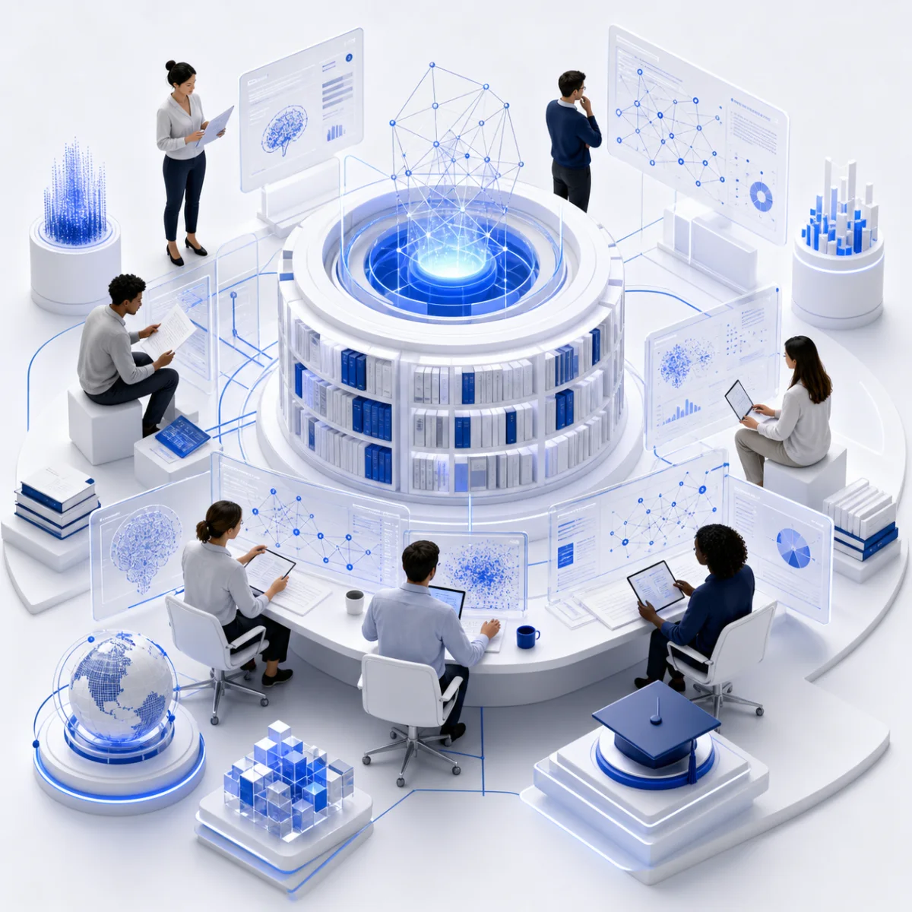
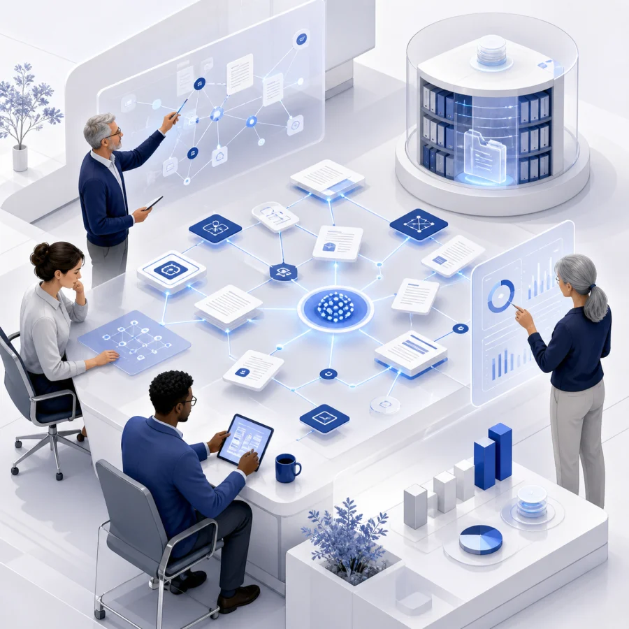
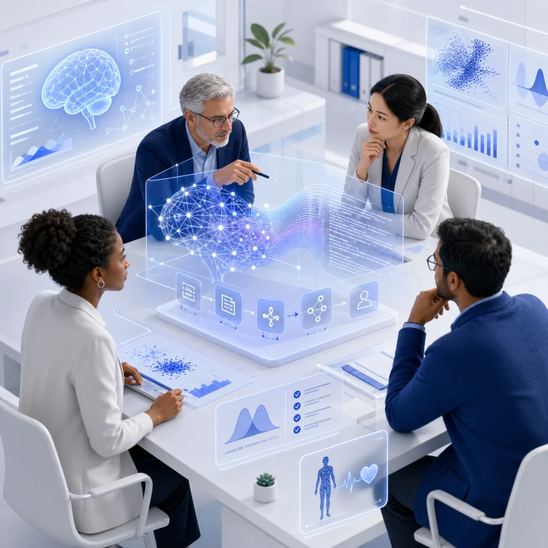
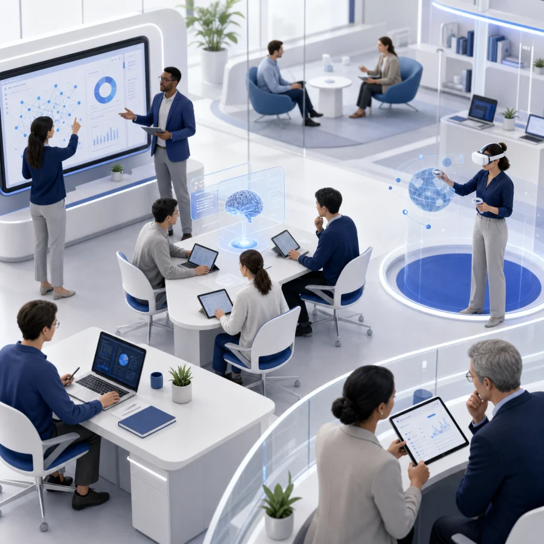

Publicaciones organizadas por líneas de investigación.
Reunimos la producción académica del grupo en tres grandes áreas: Gestión del Conocimiento, Inteligencia Artificial y Sistemas Inteligentes, y Educación y TIC.

Gestión del Conocimiento.
Investigaciones sobre cómo las organizaciones crean, comparten y aprovechan su conocimiento. Reúne modelos de gestión y medición, ontologías y arquitecturas tecnológicas, con estudios sobre innovación, pymes y la relación entre conocimiento y motivación en el trabajo.

Ver trabajos de esta categoría
Inteligencia Artificial y Sistemas Inteligentes.
Trabajos sobre aprendizaje automático, analítica predictiva, procesamiento del lenguaje y sistemas de apoyo a decisiones. Incluye modelos y arquitecturas explicables, revisiones de literatura y aplicaciones en salud, junto con estudios sobre agentes autónomos y contenido generado por IA.

Ver trabajos de esta categoría
Educación y TIC.
Una línea dedicada a la relación entre educación y tecnologías digitales. Aborda la formación en informática, las prácticas docentes y el vínculo entre universidad e industria del software, para explorar cómo conectar el aprendizaje con las necesidades del ejercicio profesional.

Ver trabajos de esta categoría
Conocimiento que se comparte para seguir investigando.
Artículos, ponencias y trabajos del equipo, organizados por línea de investigación para facilitar su consulta, circulación y aplicación.